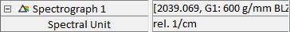

|
光谱仪
|
对于连接到 alphaControl 的每个光谱仪，将提供一个"光谱仪 X"参数组。
大多数光谱仪设置在 光谱设置中定义。

光谱单位
更改光谱单位将改变 X 轴，从而改变当前记录的硬件光谱的显示。更改此参数后开始的任何测量也将使用此参数设置的单位。此外，它还定义了 光谱拼接 和 光谱自动对焦的光谱范围单位。可用单位如下：
仅特殊系统可用：
光栅
光栅参数允许选择用于光谱仪的光栅。下拉菜单中列出的光栅取决于具体配置，但通常具有以下形式
[光栅编号：刻线密度 闪耀波长]，UHTS 300 的典型示例为 G1: 600 g/mm BLZ=500nm。
激光波长 [nm]
此参数应包含用于光谱测量的激光波长。
中心波长 [nm]
可以使用此参数调整照射在 CCD 芯片中心上的波长。此波长也将是软件中显示的光谱的中心波长。要更改中心波长，软件计算所选光栅的必要旋转。
光谱中心
光谱中心与中心波长相同。唯一区别在于描述此中心位置的单位是可变的，可以使用光谱单位参数进行调整（见下文）。
监听参数允许使用任何光谱选择新的光谱中心。光栅将被移动，使光谱中单击的位置成为新的中心波长。